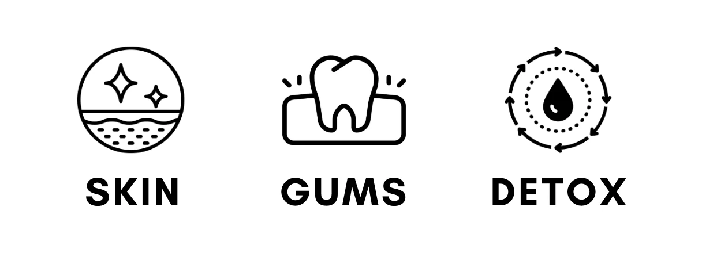

Dragon's Blood is the deep red resin of Daemonorops draco, a climbing rattan palm — traded for centuries across South East Asia, the Canary Islands and along old caravan routes into the Mediterranean. Long before anyone called it a superfood, it was valued as a wound dressing, a dye and a ceremonial substance.
This protocol explores the history and traditional use of Dragon's Blood — paired with a simple daily practice guide and a downloadable PDF study guide.
Email to order →Included with this protocol:
Skin & Vitality educational guide (PDF)
1 x Dragon's Blood Capsules (120 vegan capsules)
4 week skin & gum observation practice guide
| Format | 120 vegan capsules, 500mg per capsule |
| Source | Daemonorops draco resin |
| Tradition | South East Asian & old Mediterranean trade routes |
| Status | In stock — email to order while online checkout is being set up |
Click an image to view it larger.

Historical and traditional use only — see "What we don't claim" below.
Dragon's Blood resin has drawn scientific interest for its antioxidant and antimicrobial compounds. A selection of published laboratory research is linked below for anyone who wants to dig deeper — presented as further reading, not as claims about this product.
These are links to independently published research on Dragon's Blood resin generally — not studies of this specific product, and not medical advice. See "What we don't claim" below.
The Living Field shares the same vision and principles as Matt and Amra at Cultivate Elevate — so when it came to choosing who to partner with on the mineral and fungi side of what we do, they were an easy choice.
"Our health journeys started when we could no longer tolerate being sick so often. Feeling tired, bloated, and anxious was holding us back from enjoying a fulfilling life of adventure. So we cleaned up our diets and started to question ingredients.
This is when we started to discover superfoods. Mushrooms, shilajit, herbs, you name it! If it was nutrient dense, we were trying it. These superfoods changed our lives, and we couldn't help but want to share it with the rest of the world.
These ancient holistic foods were used for the past centuries as medicine, and it's time for their magical healing properties to elevate our lives once again. We curated the best ingredients from small organic farms all around the world.
We believe that you should be able to read every single ingredient in your food, or better yet, make it from scratch with raw ingredients. Think of us as your health besties as we go on this health journey together!"
— Matt & Amra, founders of Cultivate Elevate
This page describes historical and traditional use, not a medical claim — Dragon's Blood is a dietary supplement, not a licensed medicine, and we won't present it as one. This content is not intended to be a substitute for professional medical advice, diagnosis, or treatment. Always seek the advice of your physician or other qualified health provider with any questions you may have regarding a medical condition, and speak with a doctor before adding anything like this to your routine if you're pregnant, nursing, taking medication, or managing a health condition.
This product is a food supplement and is not intended to diagnose, treat, cure or prevent any disease. It should not be used as a substitute for a varied and balanced diet and a healthy lifestyle. Do not exceed the recommended intake, and keep out of reach of children.
Interested in this one specifically, or want to know when it's available to order? Get in touch and we'll let you know.